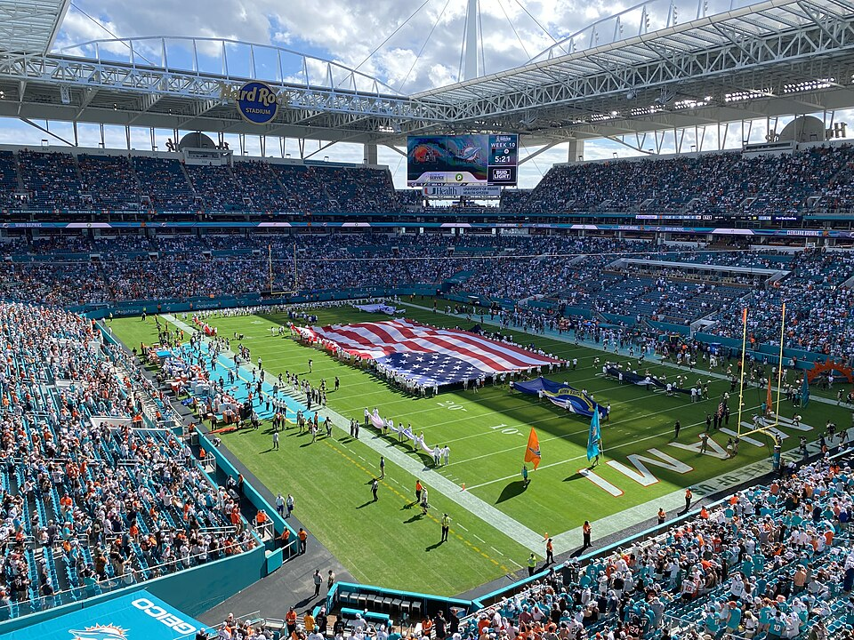

The Willies Traded
The Willis
KnightRider_85 sent Malik Willis and AJ Barner to brunosilvadev for Aaron Jones Sr. and T.J. Hockenson, the league's first trade since 2023. Four days later Willis started for the first time all season, for his new team.

Hard Rock Stadium, Miami: Gatorfan252525 / CC BY-SA 4.0
Week 8 transactions
A trade, in this league
Willis’s Willies sent Malik Willis and AJ Barner to Skinned Knee Varsity for Aaron Jones Sr. and T.J. Hockenson. KnightRider_85 sent the final version on Wednesday and it went through after the two-day review, in the early hours of Saturday, before the week 8 games.
It is the third trade in the five seasons this league has existed and the first since 2023. We have written “four trades in four seasons” on this site more than once, and that was wrong. The transaction dumps count each side of a trade separately, and the four entries we were counting are two trades: TheSoop and OneManEra in week 6 of 2023, and KnightRider_85 and SAMonFLY in week 11. So KnightRider_85 has now been in two of the league’s three trades, and both times he traded a quarterback. In 2023 he got Geno Smith for Derek Carr and Jonathan Taylor.
In September, when brunosilvadev was the only manager in the league with just two quarterbacks, we declined to predict that he would trade for a third, on the grounds that nobody here trades. He added Tanner McKee in week 7 and then traded for Willis anyway.
Skinned Knee Varsity 108.72, 4th and 35 156.34
Willis starts
Willis spent seven weeks on KnightRider_85’s bench and was never started, which we wrote about last Tuesday. Four days after the trade, brunosilvadev put him in at superflex. He went 21 of 32 for 211 yards with two touchdowns and an interception, including a 35-yard touchdown to Kevin Coleman Jr. with about four minutes left, in a 24-19 loss to the Patriots. That was 16.14 points. Daniel Jones (6.46) and Tanner McKee (8.98) were on the bench, so he was the right choice.
It did not help much. Skinned Knee Varsity scored 108.72, the lowest score of the week, and lost to derrek777 by 47.62. His best possible lineup was 110.90, only 2.18 points better than the one he set, which is the closest anyone in the league came to their best lineup this week. The roster had a bad day, and the manager made almost no mistakes with it.
On the other side, Willis outscored one of KnightRider_85’s two starting quarterbacks for the fourth time this season. Jared Goff scored 10.54 at superflex. The other three times were weeks 1, 5 and 7, when Willis was still on his bench.
Willis’s Willies 111.66, LeBron Offensive Foul 149.18
What KnightRider_85 got
Hockenson caught four passes for 58 yards and a touchdown and scored 14.80, on the bench. KnightRider_85 started Chig Okonkwo at tight end, a free agent he picked up the same week, and Okonkwo scored 2.70. Jones scored 6.00, also on the bench, while Breece Hall started at running back for the third straight week and scored 0.00 for the third straight week. Hall is listed out again for week 9.
His best possible lineup was 138.80, which still loses to evspade’s 149.18 and still misses the 147.01 median. The trade did not cost him anything this week, and putting the two new players in the lineup would not have changed the result either. He is 9-7, fourth in the table.
Before and after
Who it helped
We ran both rosters through the same lineup builder we use for the power rankings, once as they are and once with the four players swapped back. The trade helped brunosilvadev on every measure and left KnightRider_85 close to where he started.
brunosilvadev’s gain is almost all at quarterback. Willis replaces Daniel Jones in his best lineup, and on season projections that is worth 72.6 points, less 0.7 for losing Jones from a flex spot. Barner does not make his lineup on any measure.
KnightRider_85’s numbers are more interesting. On Sleeper’s season projections, Willis was the best quarterback on his roster, and we pointed that out in September. Trading him costs 17.6 points of projected lineup, because Sam Darnold moves into the superflex and Jones takes a flex spot from Okonkwo. On what the players have actually scored this season it is a small gain, because Willis averaged 16.10 a game and never got into the lineup, while Jones averages 11.97 at a position where KnightRider_85 has been starting a player who does not play. Hockenson is depth behind Isaiah Likely, on season projections and on points per game.
So the man with the spare quarterbacks gave one away to the man who needed one, and got a running back who can play. On points per game both teams come out ahead, which is half the test we set for the What If piece in October. KnightRider_85’s side fails the other half. The team is still called Willis’s Willies, and there is no longer a Willis on it.
Further reading